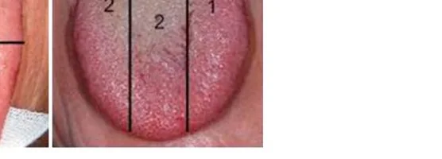
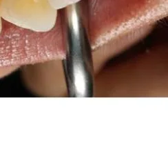

نسخه استخراجشده؛ ترجمه یا تأیید علمی انجام نشده است. وضعیت: captured
در حدود ۸۵ تا ۹۰ درصد موارد، منشأ بوی بد دهان داخل خود دهان است — نه معده، نه سینوس. این نخستین چیزی است که باید بدانی، چون بیمار معمولاً با این باور میآید که مشکل از معدهاش است.
| ترکیب | منشأ |
|---|---|
| هیدروژن سولفید (H₂S) | تجزیه سیستئین |
| متیل مرکاپتان (CH₃SH) | تجزیه متیونین |
| دیمتیل سولفید | عمدتاً منشأ خارج دهانی |
🔑 نکته کلیدی پریودنتال: نسبت متیل مرکاپتان به هیدروژن سولفید در بیماران پریودنتال بالا میرود. متیل مرکاپتان هم بدبوتر است و هم برای بافت سمیتر — نفوذپذیری مخاط را زیاد میکند و تولید کلاژناز را بالا میبرد.
همان باکتریهای گرم منفی بیهوازی پروتئولیتیک که پاتوژن پریودنتالاند: Porphyromonas gingivalis، Prevotella intermedia، Treponema denticola و Fusobacterium nucleatum. آنها پروتئینهای بزاق، سلولهای مرده و خون را تجزیه میکنند و اسیدهای آمینه سولفوردار را به VSC تبدیل میکنند.
📌 پس هالیتوزیس دهانی و پریودنتیت یک ریشه میکروبی مشترک دارند.
| روش | ویژگی |
|---|---|
| ارگانولپتیک (بویایی معاینهگر) | 🥇 هنوز استاندارد مرجع؛ رتبهبندی ۰ تا ۵ |
| هالیمتر | مجموع VSC را میسنجد، اجزا را تفکیک نمیکند |
| کروماتوگرافی گازی | دقیقترین؛ هر ترکیب را جدا میسنجد |
| تست BANA | حضور آنزیم باکتریهای پروتئولیتیک را نشان میدهد |
⚠️ اشتباه رایج ۱: با وجود همه دستگاهها، ارزیابی ارگانولپتیک همچنان استاندارد مرجع است — چون بینی انسان چیزی را میسنجد که اهمیت دارد: بوی قابل درک.

⚠️ اشتباه رایج ۲: هالیتوز صبحگاهی فیزیولوژیک است و بیماری محسوب نمیشود؛ ناشی از کاهش جریان بزاق در خواب است.
| دسته | ویژگی |
|---|---|
| هالیتوزیس حقیقی — دهانی | ۸۵ تا ۹۰٪ موارد؛ زبان و پاکت |
| هالیتوزیس حقیقی — خارج دهانی | تنفسی، گوارشی، دیابت (استون)، نارسایی کلیه و کبد |
| سودوهالیتوزیس | بیمار بو را حس میکند؛ دیگران و آزمون تأیید نمیکنند |
| هالیتوفوبیا | پس از درمان موفق هم بیمار همچنان باور دارد بو دارد |
⚠️ مهم: در سودوهالیتوزیس و هالیتوفوبیا، ادامهی درمان دهانی کمکی نمیکند؛ اینها نیازمند توضیح، نشان دادن نتیجه عینی سنجش، و در هالیتوفوبیا ارجاع روانشناختیاند. تکرار درمان دهانی فقط باور بیمار را تقویت میکند.

⚠️ اشتباه رایج ۳: دهانشویههای صرفاً معطر بو را میپوشانند و اثرشان کوتاهمدت است؛ ترکیبات فلزی VSC را خنثی میکنند.
⚠️ اشتباه رایج ۴: اگر پس از درمان کامل دهانی بو ادامه داشت، به منشأ خارج دهانی فکر کن و ارجاع بده — بهویژه اگر دیمتیل سولفید غالب باشد.